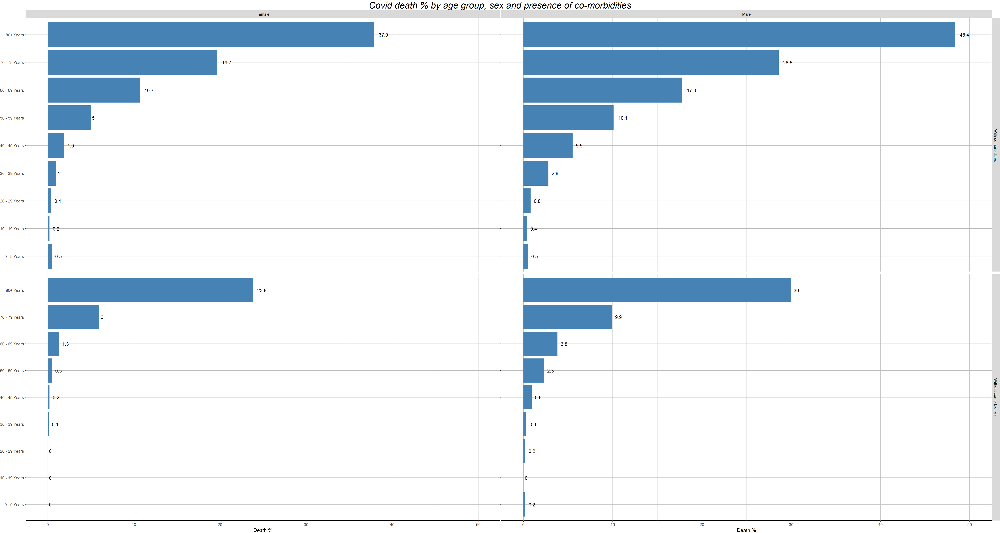
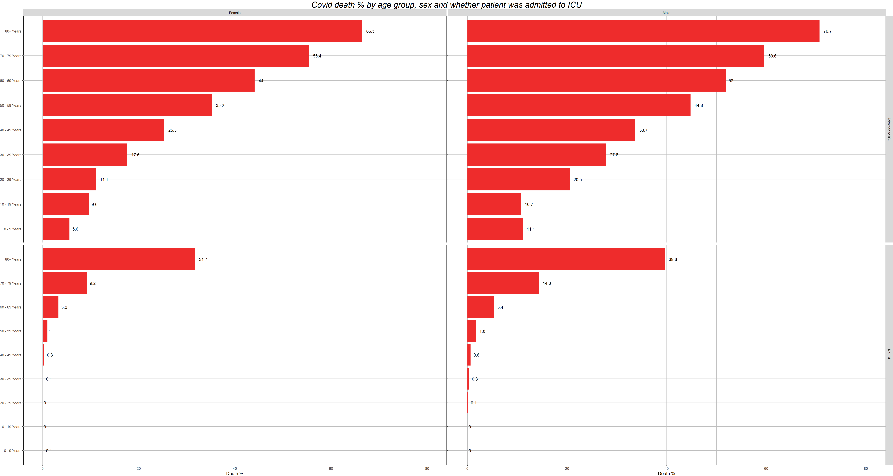

In this project, we will take a look at how COVID-19 death rates are affected by variables such as gender, age, co-morbidities and whether the patient has been admitted to the ICU. For this purpose I will create two graphs:
By age group, sex, and whether the patient had co-morbidities or not
By age group, sex, and whether the patient was admited to Intensive Care Unit (ICU) or not
We will use a loop to perform our analysis in an efficient and fast way.
IMPORTANT: - The original source can be found at the following link: https://data.cdc.gov/api/views/vbim-akqf/rows.csv?accessType=DOWNLOAD - The data is provided only for the USA, and is constantly updated - This work was last time performed on 22/10/2020 at 23:10 UK time (n. observations: 4.48m , size: 462Mb)
url <- "https://data.cdc.gov/api/views/vbim-akqf/rows.csv?accessType=DOWNLOAD"
covid_data <- vroom::vroom(url)%>%
clean_names() %>%
glimpse()## Rows: 4,481,062
## Columns: 11
## Delimiter: ","
## chr [8]: current_status, sex, age_group, Race and ethnicity (combined), hosp_yn, icu_yn...
## date [3]: cdc_report_dt, pos_spec_dt, onset_dt
##
## Use `spec()` to retrieve the guessed column specification
## Pass a specification to the `col_types` argument to quiet this message## Rows: 4,481,062
## Columns: 11
## $ cdc_report_dt <date> 2020-03-22, 2020-03-23, 2020-03-15, 20...
## $ pos_spec_dt <date> 2020-03-15, 2020-03-15, 2020-03-15, 20...
## $ onset_dt <date> 2020-03-11, NA, NA, NA, NA, 2020-03-03...
## $ current_status <chr> "Laboratory-confirmed case", "Laborator...
## $ sex <chr> "Female", "Female", "Female", "Female",...
## $ age_group <chr> "0 - 9 Years", "0 - 9 Years", "0 - 9 Ye...
## $ race_and_ethnicity_combined <chr> "Multiple/Other, Non-Hispanic", "Unknow...
## $ hosp_yn <chr> "Yes", "Unknown", "Missing", "Missing",...
## $ icu_yn <chr> "Yes", "Unknown", "Missing", "Missing",...
## $ death_yn <chr> "No", "Unknown", "Missing", "Missing", ...
## $ medcond_yn <chr> "Yes", "Unknown", "Missing", "Missing",...clean_data <- covid_data %>%
filter((hosp_yn == "Yes" | hosp_yn == "No") &
(race_and_ethnicity_combined != "Unknown") &
(medcond_yn == "Yes"|medcond_yn == "No") &
current_status == "Laboratory-confirmed case" &
(icu_yn == "Yes"|icu_yn == "No") &
(death_yn == "Yes"|death_yn == "No") &
age_group!="Unknown") %>% drop_na()
ages <- levels(factor(clean_data$age_group))
plots <- function(ibool, isex, icondition){
if (ibool == 0){
#ibool == 0 means it's medcond
new <- clean_data %>%
filter(sex== isex & medcond_yn == icondition)
}
else if (ibool == 1){
#ibool == 0 means it's icu
new <- clean_data %>%
filter(sex == isex & icu_yn == icondition)
}
else{
return(0)
}
new_dead <- new %>%
filter(death_yn=="Yes")
v <- c()
for (i in 1:9){
perc <- nrow(new_dead %>%
filter(age_group == ages[i]))*100/nrow(new %>%
filter(age_group == ages[i]))
v <- append(v, round(perc,1))
}
print(v)
print(length(v))
df <- data.frame("ages" = ages,
"perc" = v)
p <- ggplot(data=df,
aes(x=v, y=ages)) +
geom_text(aes(label=v),hjust = -0.5,
position = position_dodge(width = 1),
color="black", size=3.5) +
theme (panel.background = element_rect(fill ="white",colour = "black",
size = 0.5,
linetype = "solid"),
panel.grid.major = element_line(size = 0.5,
linetype = 'solid',
colour = "grey"),
panel.grid.minor = element_line(size = 0.25,
linetype = 'solid',
colour = "grey"))
if (ibool == 0){
p <-p +
geom_bar(stat="identity",
fill="steelblue")
}
else {
p <- p +
geom_bar(stat="identity",
fill="firebrick2")
}
return(p)
}
p1 <- plots(0,"Female","Yes") +
facet_grid(~"Female" ) +
theme(axis.title = element_blank(),
axis.text.x = element_blank(),
plot.margin=unit(c(0,0,-0.2,0), "cm")) +
scale_x_continuous(limits=c(0, 50))## [1] 0.5 0.2 0.4 1.0 1.9 5.0 10.7 19.7 37.9
## [1] 9p2 <- plots(0,"Male","Yes") +
facet_grid("With comorbidities"~"Male" ) +
theme(axis.title = element_blank(),
axis.text = element_blank(),
plot.margin=unit(c(0,0,-0.2,0), "cm")) +
scale_x_continuous(limits=c(0, 50))## [1] 0.5 0.4 0.8 2.8 5.5 10.1 17.8 28.6 48.4
## [1] 9p3 <- plots(0,"Female","No") +
labs( x = "Death %") +
scale_x_continuous(limits=c(0, 50)) +
theme(plot.margin=unit(c(0.2,0,0,0),"cm"),
axis.title.y = element_blank())## [1] 0.0 0.0 0.0 0.1 0.2 0.5 1.3 6.0 23.8
## [1] 9p4 <- plots(0,"Male","No") +
labs( x = "Death %") +
facet_grid("Without comorbidities" ~ .) +
theme(axis.title.y = element_blank(),
axis.text.y = element_blank(),
plot.margin=unit(c(0.2,0,0,0),"cm")) +
scale_x_continuous(limits=c(0, 50))## [1] 0.2 0.0 0.2 0.3 0.9 2.3 3.8 9.9 30.0
## [1] 9
g1 <- plots(1,"Female","Yes") +
facet_grid(~"Female" ) +
theme(axis.title = element_blank(),
axis.text.x = element_blank(),
plot.margin=unit(c(0,0,-0.2,0), "cm")) +
scale_x_continuous(limits=c(0, 80))## [1] 5.6 9.6 11.1 17.6 25.3 35.2 44.1 55.4 66.5
## [1] 9g2 <- plots(1,"Male","Yes") + facet_grid("Admitted to ICU"~"Male" ) +
theme(axis.title = element_blank(),
axis.text = element_blank(),
plot.margin=unit(c(0,0,-0.2,0), "cm")) +
scale_x_continuous(limits=c(0, 80))## [1] 11.1 10.7 20.5 27.8 33.7 44.8 52.0 59.6 70.7
## [1] 9g3 <- plots(1,"Female","No") +
labs( x = "Death %") +
scale_x_continuous(limits=c(0, 80)) +
theme(plot.margin=unit(c(0.2,0,0,0),"cm"),
axis.title.y = element_blank())## [1] 0.1 0.0 0.0 0.1 0.3 1.0 3.3 9.2 31.7
## [1] 9g4 <- plots(1,"Male","No") +
labs( x = "Death %") +
facet_grid("No ICU" ~ .) +
theme(axis.title.y = element_blank(),
axis.text.y = element_blank(),
plot.margin=unit(c(0.2,0,0,0),"cm")) +
scale_x_continuous(limits=c(0, 80))## [1] 0.0 0.0 0.1 0.3 0.6 1.8 5.4 14.3 39.6
## [1] 9
As a final step, we can plot the conclusive graphs for our vision.